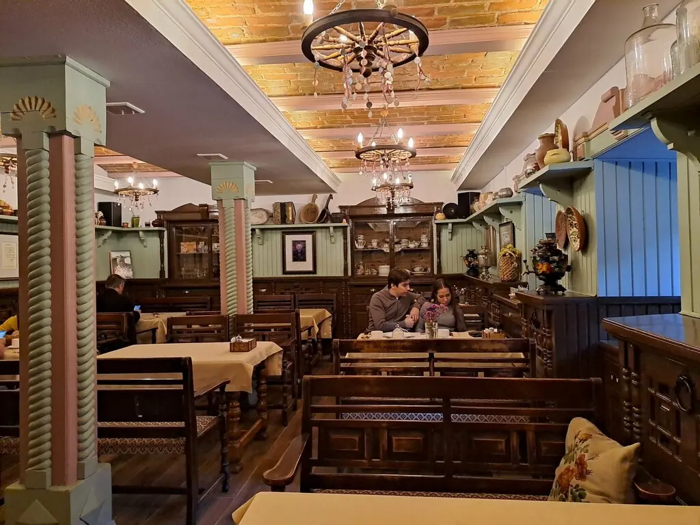

Чебоксары+7 8352 62-73-79
Ехрем Хуща
Ресторация купца Ефремова у Чебоксарского залива. Чувашская кухня, народный интерьер и всего 27 мест, поэтому стол лучше занять заранее.
5,0 · 3451 оценка

Посчитаем на счётах
Часть меню с Яндекс Карт, цены уточняйте у официанта. Счёты только для удовольствия, заказ делается в ресторане.
Записи в книге
До чего у вас атмосферно и вкусно. А девочки какие приятные. Помогли прочитать на чувашском фразы.G S
Интерьер, антураж в народном чувашском стиле. Блюда вкусные. Отличный суп какай-шурпи.Алексей Мастер
Пирожок с солёным огурцом открытие! Вареники с луком и яйцом обязательно к употреблению!Ilya Fedorov